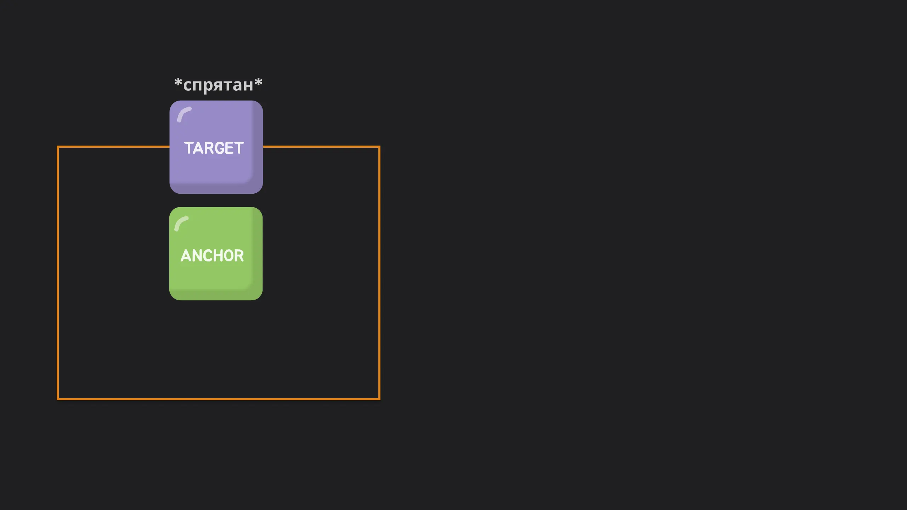

Бросаем якорь: Новая эра нативных тултипов и поповеров
Расторгуева Анна
Бросаем якорь:
Новая эра нативных тултипов и поповеров
Расторгуева Анна

О себе
- Фронтенд-разработчик из Сбера
- В профессии с 2019 г.
- Люблю котиков
- Люблю красивые анимашки
Боль: Как это было раньше?
Решение: CSS Anchor Positioning API
Anchor
Элемент-ориентир. К нему привязываются другие
anchor-name: --my-anchor;
Target
Абсолютно позиционированный элемент, который нужно разместить
position: absolute;
position-anchor: --my-anchor;

<div class="anchor">anchor</div>
<div class="target">target</div>
.anchor {
anchor-name: --my-anchor;
}
.target {
position: absolute;
position-anchor: --my-anchor;
}
Сетка позиций:
position-area
.target {
position-area: top right;
/* или */
position-area: start end;
}

.target {
position-area: center right;
/* или */
position-area: start center;
}

.target {
position-area: span-top left;
/* или */
position-area: span-start start;
}

.target {
position-area: bottom span-all;
/* или */
position-area: end span-all;
}
Контроль видимости:
position-visibility

.target {
position-visibility: always;
}

.target {
position-visibility: anchors-visible;
}

.target {
position-visibility: no-overflow;
}
Умные fallbacks:
position-try-*
position-try-fallbacks:
<dashed-ident> || <try-tactic> | <"position-area">
try-tactic
- flip-block
- flip-inline
- flip-start
"position-area"
- top/left/right/bottom
- start/end/center
- span-*
position-try-order:
normal |
most-width | most-height |
most-block-size | most-inline-size
Кастомные fallbacks:
@position-try
@position-try <dashed-ident> {
<declaration-list>
}
@position-try --my-custom-position {
position-area: top left;
width: 50px;
}
.target {
position: absolute;
position-area: top right;
position-try-fallbacks: --my-custom-position, bottom left;
position-try-order: most-width;
width: 100px;
}
anchor(<anchor-name> <anchor-side>, <length-percentage>)
css anchor()
/* Define an anchor element */
.anchor {
anchor-name: --my-anchor;
}
/* Anchor a target element */
.target {
position: absolute;
left: anchor(--my-anchor left, 0);
}
anchor-size([ <anchor-element> || <anchor-size> ]? , <length-percentage>)
anchor-size
- block/inline
- self-block/self-inline
- width/height
- и другие
anchor-size()
.target {
width: anchor-size(width, 20%); /* uses default anchor */`
height: anchor-size(--other-anchor inline-size, 100px);
}
Поддержка
- anchor-name Chrome 125+, Safari 26*
- anchor-position Chrome 125+, Safari 26*
- position-visibility Chrome 125+
- position-try-fallbacks Chrome 128+, Safari 26*
- position-try-order Chrome 125+, Safari 26*
- @position-try Chrome 125+
Итоги и выводы Anchor Position API
-
Что это?
Мощнейший API для позиционирования на чистом CSS
-
Что решает?
Избавляет от тонн хрупкого JS-кода для поповеров, тултипов, меню
-
В чем преимущество?
Производительность, надежность, декларативность
-
Когда использовать?
Уже сейчас для прогрессивного улучшения в Chrome.
В будущем — как стандартный подход
Всем спасибо!
Fin